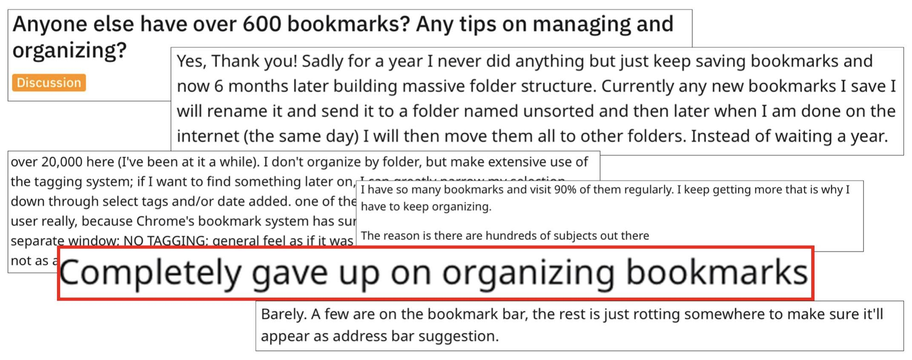
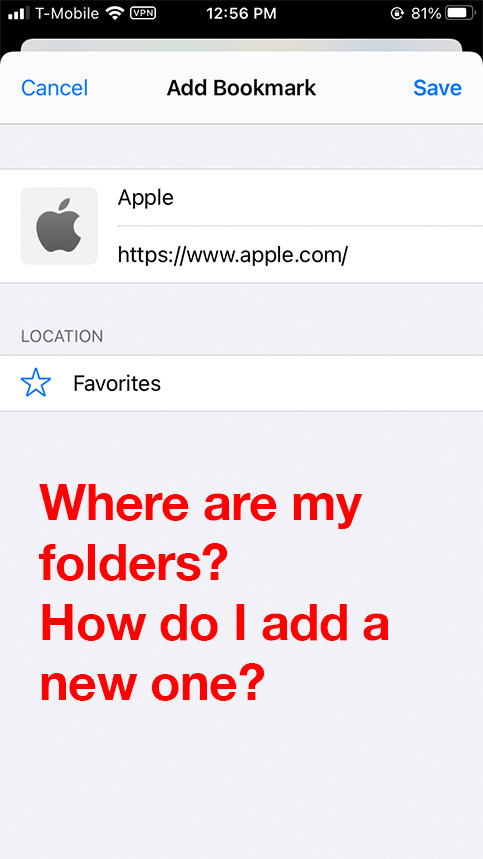
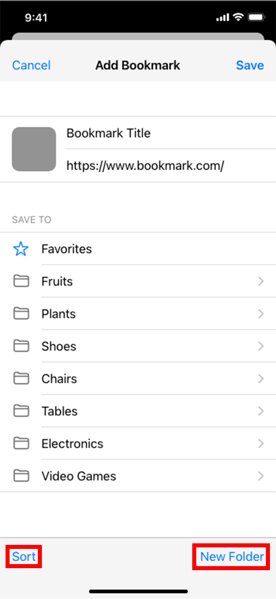

Completed in 2021.
This project is not official or affiliated with Apple.
Aldon Chen
iOS Safari Bookmarks Redesign

Completed in 2021.
This project is not official or affiliated with Apple.
Summary
Goal: Help users better organize their bookmarks.
Solution: Encourage users to organize bookmarks from the initial creation of the bookmark and build better organizing habits.
Method: Redesigned information hiearchy and microinteractions on iOS Safari to make it easier to organize bookmarks from their creation.
Process
A quick search query on Reddit for "organizing bookmarks" will yield numerous posts with comments like these:
Given that it seems like there are quite a few people that struggle with organzing their bookmarks, what if there was a system that encouraged users to organize bookmarks from the start?
1. Initial page when saving new bookmark.
Situation: User saves new bookmark, wants to add to new folder with the intention of adding more relevant bookmarks.
Where is the button to add a new folder?
Why does the user see ‘Favorites’ and nothing else?
Oh, so you click on ‘Favorites’ and its actually just a button for the entire directory.
This will get messy and confusing fast. If there are a lot of folders (like the mentioned Reddit posts/comments) and all the subfolders are displayed simultaneous, it'll just be one long list.
The button to add a new folder is also at the bottom of the list, so if the list is long, the user will have to scroll awhile to even find the button.

User is a student who studies many different topics. They are researching a certain topic and already have multiple bookmarks in the folder they made for the topic. They’re finding many more different sources and are bookmarking as they go.
(Share > add to bookmarks > add new folder > save > sort by recently added)
User likes to learn new hobbies, discovers a new hobby they would like to try while browsing the internet. Wants to start a new bookmarks folder for information on said hobby.
(Share > New Folder > Add name for new folder > save)
1. Initial page when saving new bookmark.
All main folders are now immediately visible.
'New Folder' button is now always present.
Subfolders no longer appear simultaneously with parent folders.
Added 'Sort' feature.
User taps on a folder to reveal its subfolders if there are any.
New 'Sort' feature allows user to sort by recently edited and name to make navigation easier when trying to find folders in a long list.